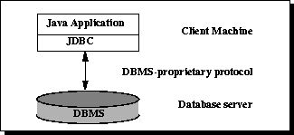
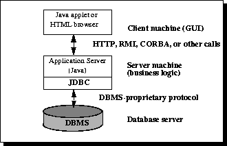

La API de JDBC permite a los usuarios acceder a cualquier forma de datos tabulares, especialmente los datos almacenados en bases de datos relacionales.
Flujo de ejecución:
Conectar a la fuente de datos, como: base de datos.
Enviar instrucciones de consulta y actualización a la base de datos.
Procesar la respuesta de la base de datos y los resultados devueltos.
Arquitectura de JDBC
Se divide en arquitectura de dos capas y arquitectura de tres capas.
Dos capas

Función: en esta arquitectura, los applets de Java o las aplicaciones acceden directamente a la fuente de datos.
Condición: se requiere que el Driver pueda interactuar con la base de datos a la que se accede.
Mecanismo: los comandos del usuario se transmiten a la base de datos u otra fuente de datos, y luego se devuelven los resultados.
Despliegue: la fuente de datos puede estar en otra máquina, y el usuario se conecta a través de la red, lo que se denomina configuración C/S (puede ser intranet o Internet).
Tres capas

La particularidad de esta arquitectura es que introduce servicios de capa intermedia.
Flujo: tanto los comandos como los resultados pasan por esta capa.
Beneficios: puede aumentar el control de acceso a los datos empresariales, así como múltiples tipos de actualizaciones; además, también puede simplificar el despliegue de aplicaciones y, en la mayoría de los casos, ofrece ventajas de rendimiento.
Tendencia histórica: anteriormente, debido a problemas de rendimiento, la capa intermedia se escribía en C o C++. Con la aparición de compiladores optimizados (que convierten el bytecode de Java en código de máquina específico y eficiente) y el desarrollo de tecnologías como EJB, Java comenzó a utilizarse en el desarrollo de la capa intermedia. Esto también hizo que las ventajas de Java resaltaran. Al usar Java como lenguaje de código en el servidor, JDBC recibió cada vez más atención.
Pasos de programación de JDBC
Cargar el driver:
Class.forName(driverClass)
//加载MySql驱动
Class.forName("com.mysql.jdbc.Driver")
//加载Oracle驱动
Class.forName("oracle.jdbc.driver.OracleDriver")
Obtener la conexión a la base de datos:
DriverManager.getConnection("jdbc:mysql://127.0.0.1:3306/imooc", "root", "root");
Crear el objeto Statement\PreparedStatement:
conn.createStatement(); conn.prepareStatement(sql);
Ejemplo completo
import java.sql.Connection;
import java.sql.DriverManager;
import java.sql.ResultSet;
import java.sql.Statement;
public class DbUtil {
public static final String URL = "jdbc:mysql://localhost:3306/imooc";
public static final String USER = "liulx";
public static final String PASSWORD = "123456";
public static void main(String[] args) throws Exception {
//1.加载驱动程序
Class.forName("com.mysql.jdbc.Driver");
//2. 获得数据库连接
Connection conn = DriverManager.getConnection(URL, USER, PASSWORD);
//3.操作数据库，实现增删改查
Statement stmt = conn.createStatement();
ResultSet rs = stmt.executeQuery("SELECT user_name, age FROM imooc_goddess");
//如果有数据，rs.next()返回true
while(rs.next()){
System.out.println(rs.getString("user_name")+" 年龄："+rs.getInt("age"));
}
}
}
CRUD
public class DbUtil {
public static final String URL = "jdbc:mysql://localhost:3306/imooc";
public static final String USER = "liulx";
public static final String PASSWORD = "123456";
private static Connection conn = null;
static{
try {
//1.加载驱动程序
Class.forName("com.mysql.jdbc.Driver");
//2. 获得数据库连接
conn = DriverManager.getConnection(URL, USER, PASSWORD);
} catch (ClassNotFoundException e) {
e.printStackTrace();
} catch (SQLException e) {
e.printStackTrace();
}
}
public static Connection getConnection(){
return conn;
}
}
//模型
package liulx.model;
import java.util.Date;
public class Goddess {
private Integer id;
private String user_name;
private Integer sex;
private Integer age;
private Date birthday; //注意用的是java.util.Date
private String email;
private String mobile;
private String create_user;
private String update_user;
private Date create_date;
private Date update_date;
private Integer isDel;
//getter setter方法。。。
}
//---------dao层--------------
package liulx.dao;
import liulx.db.DbUtil;
import liulx.model.Goddess;
import java.sql.Connection;
import java.sql.ResultSet;
import java.sql.SQLException;
import java.sql.Statement;
import java.util.ArrayList;
import java.util.List;
public class GoddessDao {
//增加
public void addGoddess(Goddess g) throws SQLException {
//获取连接
Connection conn = DbUtil.getConnection();
//sql
String sql = "INSERT INTO imooc_goddess(user_name, sex, age, birthday, email, mobile,"+
"create_user, create_date, update_user, update_date, isdel)"
+"values("+"?,?,?,?,?,?,?,CURRENT_DATE(),?,CURRENT_DATE(),?)";
//预编译
PreparedStatement ptmt = conn.prepareStatement(sql); //预编译SQL，减少sql执行
//传参
ptmt.setString(1, g.getUser_name());
ptmt.setInt(2, g.getSex());
ptmt.setInt(3, g.getAge());
ptmt.setDate(4, new Date(g.getBirthday().getTime()));
ptmt.setString(5, g.getEmail());
ptmt.setString(6, g.getMobile());
ptmt.setString(7, g.getCreate_user());
ptmt.setString(8, g.getUpdate_user());
ptmt.setInt(9, g.getIsDel());
//执行
ptmt.execute();
}
public void updateGoddess(){
//获取连接
Connection conn = DbUtil.getConnection();
//sql, 每行加空格
String sql = "UPDATE imooc_goddess" +
" set user_name=?, sex=?, age=?, birthday=?, email=?, mobile=?,"+
" update_user=?, update_date=CURRENT_DATE(), isdel=? "+
" where id=?";
//预编译
PreparedStatement ptmt = conn.prepareStatement(sql); //预编译SQL，减少sql执行
//传参
ptmt.setString(1, g.getUser_name());
ptmt.setInt(2, g.getSex());
ptmt.setInt(3, g.getAge());
ptmt.setDate(4, new Date(g.getBirthday().getTime()));
ptmt.setString(5, g.getEmail());
ptmt.setString(6, g.getMobile());
ptmt.setString(7, g.getUpdate_user());
ptmt.setInt(8, g.getIsDel());
ptmt.setInt(9, g.getId());
//执行
ptmt.execute();
}
public void delGoddess(){
//获取连接
Connection conn = DbUtil.getConnection();
//sql, 每行加空格
String sql = "delete from imooc_goddess where id=?";
//预编译SQL，减少sql执行
PreparedStatement ptmt = conn.prepareStatement(sql);
//传参
ptmt.setInt(1, id);
//执行
ptmt.execute();
}
public List<Goddess> query() throws SQLException {
Connection conn = DbUtil.getConnection();
Statement stmt = conn.createStatement();
ResultSet rs = stmt.executeQuery("SELECT user_name, age FROM imooc_goddess");
List<Goddess> gs = new ArrayList<Goddess>();
Goddess g = null;
while(rs.next()){
g = new Goddess();
g.setUser_name(rs.getString("user_name"));
g.setAge(rs.getInt("age"));
gs.add(g);
}
return gs;
}
public Goddess get(){
Goddess g = null;
//获取连接
Connection conn = DbUtil.getConnection();
//sql, 每行加空格
String sql = "select * from imooc_goddess where id=?";
//预编译SQL，减少sql执行
PreparedStatement ptmt = conn.prepareStatement(sql);
//传参
ptmt.setInt(1, id);
//执行
ResultSet rs = ptmt.executeQuery();
while(rs.next()){
g = new Goddess();
g.setId(rs.getInt("id"));
g.setUser_name(rs.getString("user_name"));
g.setAge(rs.getInt("age"));
g.setSex(rs.getInt("sex"));
g.setBirthday(rs.getDate("birthday"));
g.setEmail(rs.getString("email"));
g.setMobile(rs.getString("mobile"));
g.setCreate_date(rs.getDate("create_date"));
g.setCreate_user(rs.getString("create_user"));
g.setUpdate_date(rs.getDate("update_date"));
g.setUpdate_user(rs.getString("update_user"));
g.setIsDel(rs.getInt("isdel"));
}
return g;
}
}
乔山
178***4359@qq.com
Dirección de referencia
Sobre la comprensión de la arquitectura de tres capas: se puede relacionar con la vida cotidiana:
Se puede tomar como referencia la relación entre el camarero, el cocinero y el comprador:
El cliente trata directamente con el camarero. El cliente le dice al camarero (capa UI): quiero una berenjena salteada. Pero el camarero no se encarga de cocinar la berenjena, así que envía la solicitud hacia arriba y se la pasa al cocinero (capa BLL). El cocinero necesita berenjenas, entonces envía la solicitud hacia arriba y se la pasa al comprador (capa DAL). El comprador toma las berenjenas del almacén y se las devuelve al cocinero. El cocinero ejecuta el método cookEggplant(), prepara la berenjena salteada y se la devuelve al camarero. El camarero presenta la berenjena al cliente.
乔山
178***4359@qq.com
Dirección de referencia